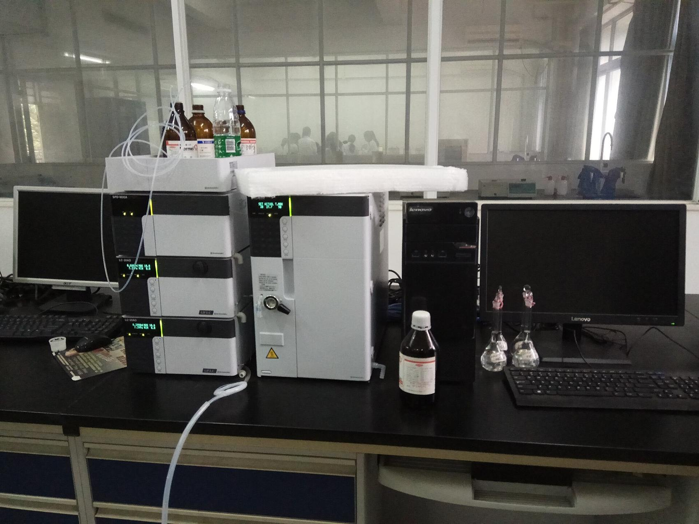
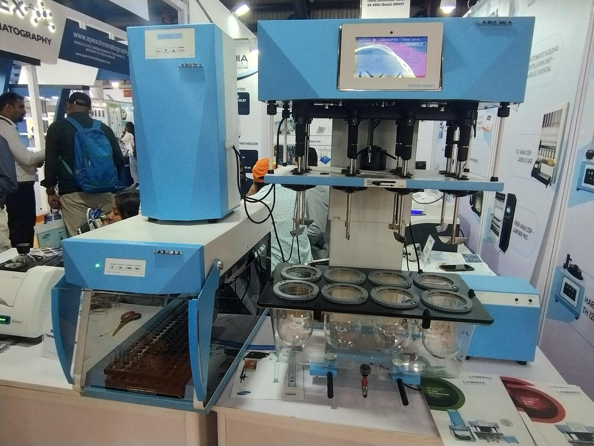
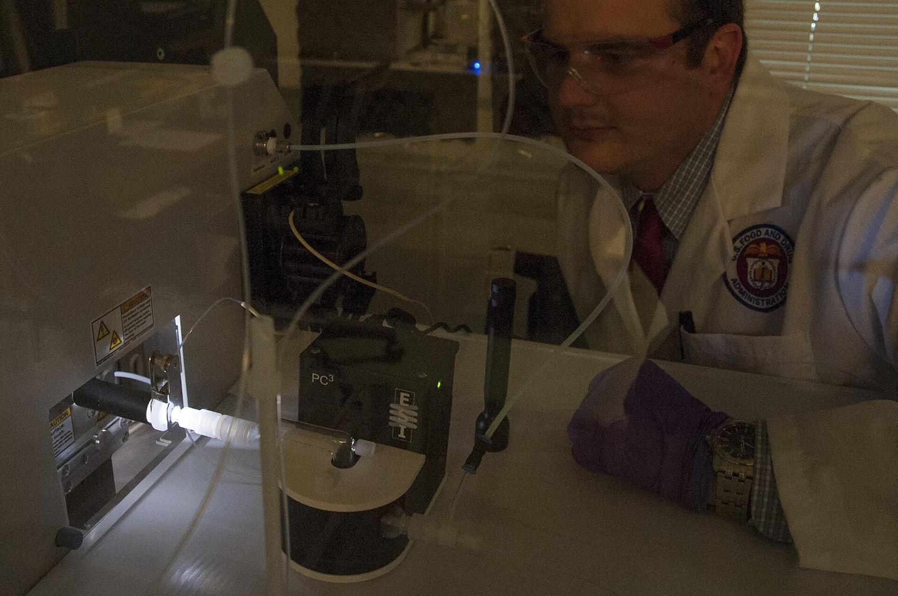
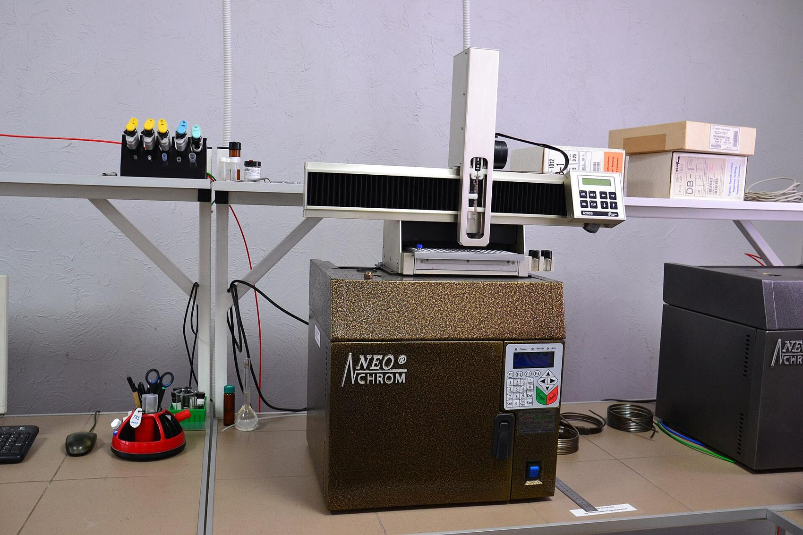

Preview PharmaCRO is assembling its lab network. Figures, accreditations, people and client stories shown are illustrative placeholders until verified.How we label claims
3 to 10 dtypical release TAT
11core release tests
ng/gNDSRI sensitivity
PharmaCRO
SmallMoleculeQCandRelease
Compendial and custom release testing for tablets, capsules, liquids, injectables and APIs, from assay to nitrosamines.
Small molecule QC and release covers every test a batch needs before it ships: identification, assay and related substances by HPLC, dissolution in all USP apparatus, content uniformity, residual solvents, elemental impurities by ICP-MS, nitrosamines and NDSRIs by LC-MS/MS, polymorph, particle size and water. Typical turnaround is 3 to 10 business days.
Small Molecule QC and Release
Release batches with confidence.
Release testing for tablets, capsules, injectables and APIs.
Typical turnaround 3 to 10 days
Dr Ananya RaoHead of Small Molecule Analytics Illustrative
Q=80%at 30 min6vessels per run0.03 ppmtypical NDMA LOQ24 hCritical tier
Blister packs of white tablets on a blue background
Every dosage form
Immediate- and modified-release tablets, hard and soft capsules, oral solutions and suspensions, injectables, creams and APIs. One method library, validated once and run at every site.
Same methods and templates at every lab
Second-person review on every result
Raw data and audit trail with every CoA


What we test
12 tests, each with its standard, turnaround and sample need.
Search or filter by standard. Open any row for the method summary, instruments and the Method Library entry.
Test and methodStandardTypical TATSampleAccreditation
Assay and related substances (HPLC/UPLC)USP ⟨621⟩, Ph. Eur. 2.2.29, ICH Q3B3 to 5 days2 g or 20 units17025 target
Stability-indicating reversed-phase methods with UV or PDA detection; peak purity on every run.
No test matches. Ask us anyway: we run many non-listed methods.
Accreditation shows the target scope per method. Placeholder Final scope is confirmed per site on the accreditation wall.
Regulatory coverage
Written for the regulator who will read your file.
Methods are written to USP, Ph. Eur., JP and IP expectations, and reports are formatted for FDA, EMA, CDSCO and PMDA submissions and inspections.
FDAEMACDSCOPMDAWHO PQUSPPh. Eur.JPIPHSAMHRAICH
Badges for your region light up. Change region in the header.
Instruments and capability
Named instruments. Real capacity.
Every site runs the same platforms on the same software, so a method validated in one lab runs identically in the next.
UHPLC with PDA
Up to 1,300 bar
PDA 190 to 800 nm
Validated CDS with audit trail
24 systems planned at the flagship
Dissolution baths
USP apparatus 1, 2, 3 and 4
Automated sampling
Fibre optic UV for real-time profiles
Mechanical calibration per ASTM E2503

ICP-MS
24 ICH Q3D elements
Collision/reaction cell
Microwave closed-vessel digestion
Sub-µg/g limits
Triple quadrupole LC-MS/MS
NDSRIs at ng/g
MRM with qualifier ions
HRMS confirmation available
Shared method library across sites

GC with headspace
USP ⟨467⟩ residual solvents
FID and MS detection
120-vial autosampler
Nitrosamines by GC-MS/MS
72%of planned flagship HPLC capacity booked in a typical week
Capacity planning model for the Hyderabad flagship. Planned capacity
Turnaround tiers
Pick a tier. See your date.
Business days from sample receipt and acceptance.
Ship today, results by
Indicative business days after sample receipt and acceptance. Price multipliers are guidance, confirmed in your quote. If we miss the date, the fee for that test is credited subject to commercial approval.
Sample requirements
Ship it right the first time.
Tick each item as you prepare the shipment. When everything is ticked, the shipping label request unlocks.
Accreditation scope: assay, related substances, dissolution, uniformity, residual solvents, elemental impurities and nitrosamines by the methods listed. Target scope Final scope per site on the accreditation wall.
Dr Ananya RaoHead of Small Molecule AnalyticsHPLC, dissolution and nitrosamine risk · HyderabadAsk AnanyaIllustrative profile
Most failed releases are not chemistry problems. They are paperwork, sample and method-version problems. We remove those first.
Dr Ananya Rao Illustrative
Signature tool
Batch Release Planner
Pick a dosage form and a market. The planner lists the compendial release tests, the chapter that governs each, and an estimated turnaround.
General guidance from the pharmacopoeias. Your registered specification always governs. IP chapters are cited by test name. Tests run in parallel; turnaround is the longest test plus two days for QA review.
FDA's NDSRI guidance (August 2023, updated since) assigns acceptable intakes by predicted potency category, from 26.5 to 1,500 ng/day. EMA uses the same CPCA approach. The work runs in three steps: a risk assessment of the API route, excipients and packaging; confirmatory testing when a risk is found; and changes to the process or specification if a result exceeds the limit.
Deadline tracker: FDA asked for confirmatory testing and any changes by 1 August 2025. Check your market's current expectation before relying on any date.
Low and variable results? Check deaeration and coning under the paddle first.
Rising results over time? Check filter adsorption and solution stability.
Capsules sticking? Use sinkers described in the method, and record them.
Cross-linked gelatin? USP ⟨711⟩ allows enzymes in the medium.
Setting specifications for a new generic
Start from the reference listed drug's labelled strength and the pharmacopoeial monograph. Impurity limits follow ICH Q3B thresholds by maximum daily dose. Dissolution acceptance usually comes from the RLD profile and the FDA dissolution database.
Common OOS root causes
In our scientists' experience the usual causes are sample preparation (incomplete extraction, wrong dilution), integration choices, expired or mislabelled standards, and instrument suitability drifting within limits. Each has a preventive control in our SOPs.
Everything in your registered specification. Typically identification, assay, related substances, dissolution or disintegration, uniformity of dosage units, water and microbial quality, plus risk-based residual solvents, elemental impurities and nitrosamines.
Standard is 3 to 10 business days. Priority roughly halves that. Critical starts within hours of receipt and can release in 24 to 72 hours when the methods are already transferred.
Do you test to my in-house method or the pharmacopoeia?#
Either. Compendial methods are verified under USP ⟨1226⟩; your in-house methods are transferred under USP ⟨1224⟩ before routine use.
Can you test nitrosamines down to the FDA acceptable intake?#
Yes. Our LC-MS/MS methods are developed to reach a limit of quantitation at or below 30% of the acceptable intake-based limit, which is what regulators usually ask for in confirmatory testing.
What happens if a result is out of specification?#
We follow the FDA OOS guidance: a Phase I laboratory investigation, notification within one business day, and no retesting into compliance.